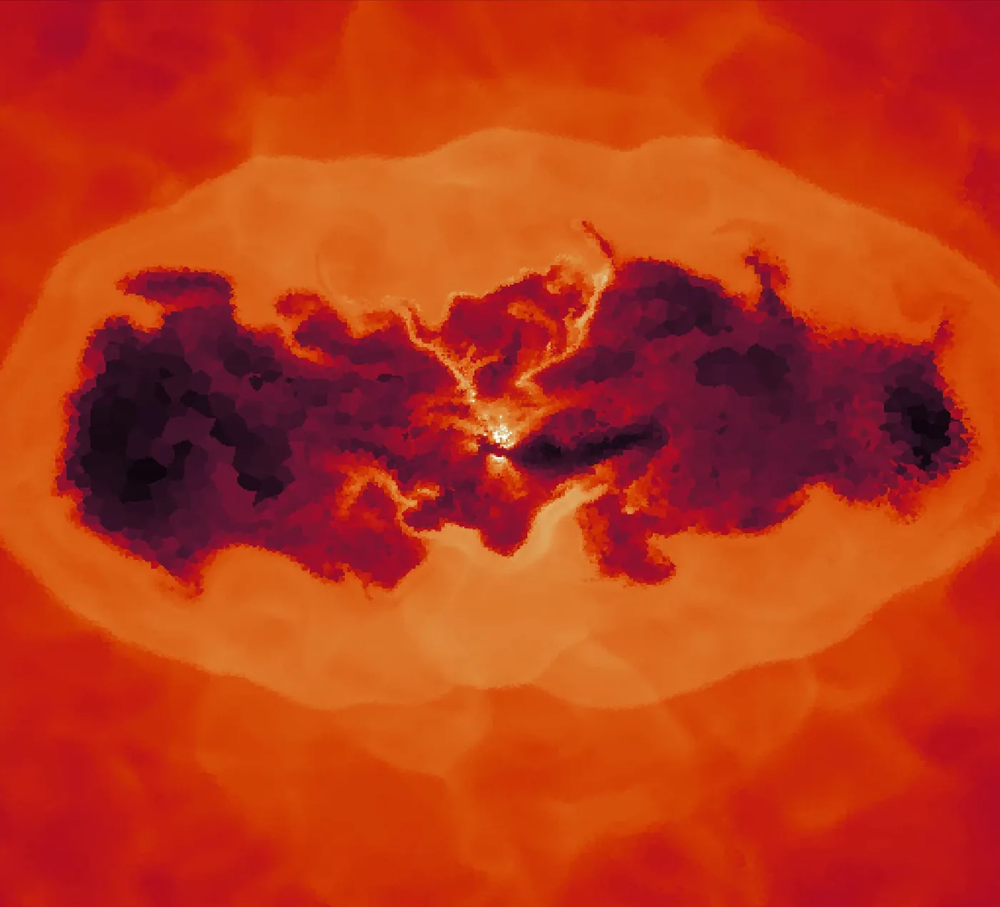

Carving Cavities in the Cosmos
Simulations of AGN jets in galaxy groups and clusters
I ran hydrodynamic simulations of resolved AGN jets with the moving-mesh code AREPO, using the jet model described in Weinberger et al. (2023). This work was an extension of the jet model into the galaxy group halo mass, to show how these jets can affect these halos. The simulations explored a parameter space of the jet power, jet density, ambient gas density in the halo and also used a self-regulation scheme using a Bondi accretion model.

Further reading
- Weinberger, R., et al. (2023). Active galactic nucleus jet feedback in hydrostatic haloes. MNRAS, 523, 1104. doi:10.1093/mnras/stad1396
- Ehlert, K., et al. (2023). Self-regulated AGN feedback of light jets in cool-core galaxy clusters. MNRAS, 518, 4622. doi:10.1093/mnras/stac2860
- Eckert, D., et al. (2024). Galaxy groups as the ultimate probe of AGN feedback. Galaxies, 12, 24. doi:10.3390/galaxies12030024